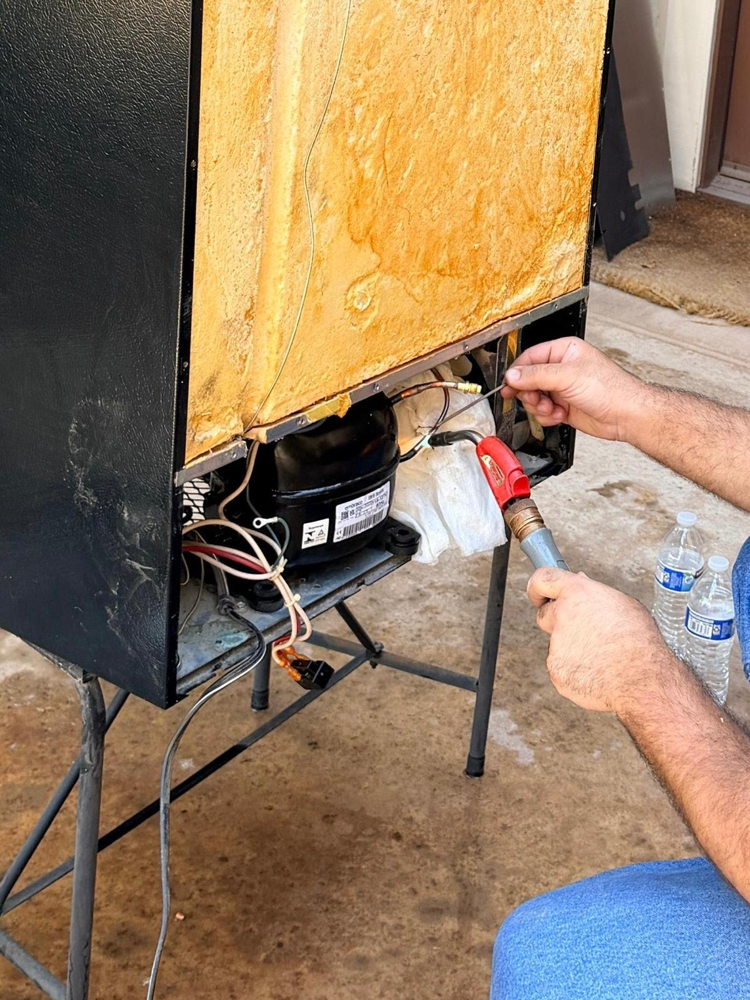

Wine Cooler Repair in
Orange County, CA
Thermoelectric and compressor wine coolers, freestanding and built-in. Sub-Zero to Vinotemp. Same-day service available.
Universal Appliances Repair Group Inc. provides wine cooler repair across Orange County, California, servicing thermoelectric and compressor-based units including Sub-Zero, EuroCave, Liebherr, U-Line, Vinotemp, Viking, KitchenAid, Perlick, Marvel, and all major brands. We repair wine coolers that are not cooling, running too warm, making noise, leaking, or displaying error codes. Serving Irvine, Newport Beach, Anaheim, Huntington Beach, Costa Mesa, and all of Orange County. Call (949) 629-5365 or book online.

Common Wine Cooler Problems We Fix
Most wine cooler failures are diagnosed and repaired in a single visit. Common parts stocked on every service vehicle.
Thermoelectric vs. Compressor: Why It Matters for Repair
Not all wine coolers fail the same way. The cooling technology inside your unit determines what breaks, how it's diagnosed, and what the repair costs. This is the most important thing a technician needs to know before opening your unit.
Uses a Peltier module to transfer heat without moving parts or refrigerant. Quieter and vibration-free, making them ideal for sparkling wines and light reds. The tradeoff: thermoelectric units can only cool about 20 degrees below ambient room temperature. In OC summer heat when indoor temps reach 80°F, a thermoelectric cooler cannot hold the 55°F target many wine owners set.
- Failed Peltier module (most common failure at 3–5 years)
- Cooling fan motor seized or slowed
- Thermostat or control board failure
- Door gasket letting warm air in continuously
Works like a standard refrigerator using a compressor and refrigerant circuit. Can maintain 45–65°F regardless of ambient room temperature, making them suitable for year-round OC use including garage and outdoor kitchen installations. Built-in, under-counter, and luxury column wine coolers are almost always compressor-based.
- Dirty condenser coils restricting airflow
- Failed evaporator fan motor
- Refrigerant leak in the sealed system
- Start relay failure preventing compressor from cycling
- Defrost heater or thermostat fault (frost buildup)
Brands We Service
We service all wine cooler brands across Orange County, from luxury built-in columns to mass-market freestanding units.
How the Repair Works
Repair or Replace Your Wine Cooler?
The right answer depends on what brand tier you have and what failed. A $300 Danby and a $4,000 Sub-Zero column are completely different repair-versus-replace decisions. Here's the framework we use.
Our guideline: If the unit is under 8 years old and the repair is under 50% of a comparable replacement, fix it. If a compressor has failed on a budget unit over 6 years old, we'll say so honestly, and we won't charge you a full repair bill just to deliver that news.
Pricing & Discounts
- $99 diagnostic fee: applied toward your repair when you approve the work. If you decide not to proceed, the $99 covers the visit.
- Multi-unit visits: first unit $99, each additional unit on the same visit $49.
- 20% off labor for repeat customers and seniors 60+ (cannot combine with other offers).
Estimates vary by brand, part availability, and diagnosis. Final quote is provided before repair. See full pricing guide →
Typical Wine Cooler Repair Costs in Orange County
Estimates vary by brand, part availability, and diagnosis. Final quote is provided before repair.
| Repair Type | Typical Range |
|---|---|
| Service call / diagnostic: Orange County market average (often credited toward repair) | $75 – $100 |
| Thermoelectric module / cooling fan | $180 – $350 |
| Evaporator fan motor | $180 – $350 |
| Thermostat / control board | $200 – $400 |
| Door gasket / seal | $150 – $300 |
| Compressor (compressor-based models) | $450 – $850 |
See our full appliance repair cost guide for broader Orange County pricing context.
Wine Cooler Repair: Frequently Asked Questions
What Our Customers Say
From our 84 verified 5-star Google reviews
AG was awesome! Fast and reliable! He explained everything to me and my machine is working excellent now. Thanks
Prompt, professional, clean, reasonably priced — would definitely recommend him. I would give him more than five stars if I could. Will be using him in the future for sure.
Very responsive, timely and professional. Price was reasonable. Would definitely use again.
On time, knowledgeable. Clean work and reliable.
Wine Cooler Not Cooling in Orange County?
Same-day service available. We stock Peltier modules, fan motors, thermostats, and door gaskets for thermoelectric and compressor units. Call before noon for same-day availability.